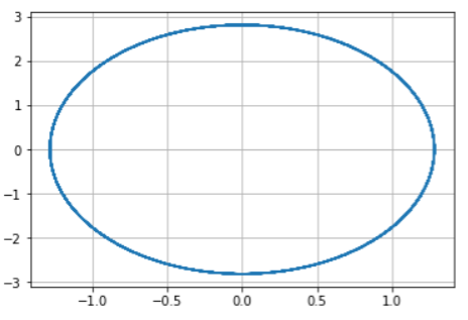
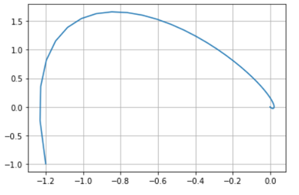
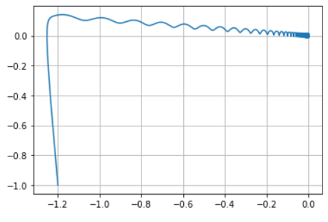

Простейший вариант
Построить фазовый портрет гармонического осциллятора и решенить уравнения гармонического осциллятора.
Движение грузика на пружинке, маятника, заряда в электрическом контуре, а также эволюция во времени многих систем в физике, химии, биологии и других науках при определенных предположениях можно описать одним и тем же дифференциальным уравнением, которое в теории колебаний выступает в качестве основной модели
Написал программу на python: import math import numpy as np from scipy.integrate import odeint import matplotlib.pyplot as plt x0 = np.array([0, -1.4]) #вектор начальных условий
w1 = 7.4 g1 = 0.0
w2 = 0.1 g2 = 10.1
w3 = 3.3 g3 = 3
t0 = 0 tmax = 33 dt = 0.05 t = np.arange(t0, tmax, dt)
def Y1(x, t): dx1_1 = x[1] dx1_2 = - w1x[0] - g1x[1] - 0 return dx1_1, dx1_2
def Y2(x, t): dx2_1 = x[1] dx2_2 = - w2x[0] - g2x[1] - 0 return dx2_1, dx2_2
def Y3(x, t): dx3_1 = x[1] dx3_2 = - w3x[0] - g3x[1] - 0.2math.cos(4t) return dx3_1, dx3_2
x1 = odeint(Y1, x0, t) x2 = odeint(Y2, x0, t) x3 = odeint(Y3, x0, t)
y1_1 = x1[:, 0] y1_2 = x1[:, 1]
y2_1 = x2[:, 0] y2_2 = x2[:, 1]
y3_1 = x3[:, 0] y3_2 = x3[:, 1]
plt.plot(y1_1, y1_2) plt.grid(axis = ‘both’)
plt.plot(y2_1, y2_2) plt.grid(axis = ‘both’)
plt.plot(y3_1, y3_2) plt.grid(axis = ‘both’) Получил следующие графики
  
Построил фазовый портрет гармонического осциллятора и решенил уравнения гармонического осциллятора.